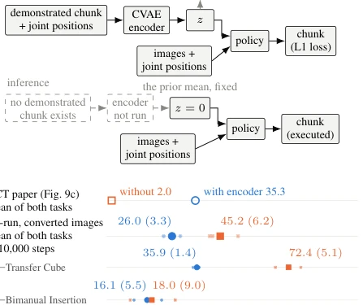
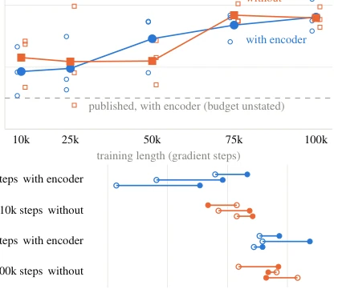

This paper serves as a "forensic-style" autopsy of a classic ACT paper, with results that are both amusing and absurd: that CVAE encoder, which was hailed to the altar and accounts for one-third of the model, not only failed to bring the expected performance leap in reproduction, but instead acted like a "never existed" ghost. The authors prove with solid data that the "cliff-like" failure from 35% plummeting to 2% in the original paper is completely unreproducible under rigorous reproduction, even showing a reversal. This is not only a falsification of technology, but also a biting satire on research rigor—when hyperparameters such as training length and checkpoint selection are slightly varied, the so-called "encoder necessity" can instantly invert the truth. Although the authors do not completely deny the potential value of CVAE on specific tasks (such as PushT), under ACT's default settings, this module is likely an "over-engineered" burden, not only increasing training costs, but also appearing meaningless due to being directly zeroed out during inference.
Action Chunking Transformers (ACT) [1] as a popular baseline for robot imitation learning, its core component Conditional Variational Autoencoder (CVAE) claims to capture differences between demonstrations. However, the conclusion in the original paper [1] regarding the removal of the encoder causing success rate to plummet from 35.3% to 2% has never been independently reproduced. Worse still, the original code lacks a removal switch, and does not report training length, seed count, and uncertainty, leading to unverifiable results. Additionally, subsequent research such as LeRobot [2] although enables this module by default, lacks ablation experiments to isolate its effect. This "black box" style performance claim makes the community unable to judge whether CVAE is the true source of performance gain, or merely a byproduct of training dynamics. This paper aims to resolve this unresolved controversy through rigorous reproduction, and investigate whether potential "posterior collapse" or training setting bias led to the distortion of the original conclusion.

Fig. 1. (a) ACT’s encoder computes z from the demonstrated chunk during training. At inference, ACT omits the encoder and uses zero. (b) The initial re-run on converted images reverses the published comparison, driven mainly by Transfer Cube (Sec. IV-A). Aggregate rows weight both tasks equally. Indented rows show the re-run’s task components. Re-run labels give each arm’s mean (SD) across 3 training seeds. Small marks show seeds and large filled marks show means. Hollow marks show published means, whose uncertainty is unreported. The re-run uses validation-selected checkpoints and temporal ensembling.
方法Method
研究采用“法医复现”策略，构建了从原始代码到 LeRobot 及自研 nanoACT 的对比框架。首先，在 Transfer Cube 和 Bimanual Insertion 两个基准任务上，使用人类演示数据，分别训练带编码器和无编码器的策略，严格控制训练步数（10k 至 100k）和种子数量（3-6 个）。其次，引入“潜在变量探针（Latent Probes）”，通过测量 KL 散度、活跃单元数量及重建优势（z-advantage），直接量化潜在变量 z 携带的信息量，而非仅依赖任务成功率。为了排查干扰因素，作者系统性地改变了训练长度、检查点选择策略（基于验证损失 vs 最终检查点）以及推理时的时间集成（temporal ensembling）方式。此外，还设计了正控制实验（如 PushT 任务、植入选择任务）以验证探针的灵敏度，并尝试通过替换编码器输出为噪声来隔离训练过程中的影响。整个流程旨在剥离超参数敏感性，还原 CVAE 的真实贡献。
The study adopts a "forensic reproduction" strategy, building a comparison framework from original code to LeRobot and self-developed nanoACT. First, on two benchmark tasks Transfer Cube and Bimanual Insertion, using human demonstration data, train policies with and without encoder respectively, strictly controlling training steps (10k to 100k) and seed count (3-6). Second, introduce "Latent Probes", by measuring KL divergence, active unit count, and reconstruction advantage (z-advantage), directly quantify the information carried by latent variable z, rather than relying solely on task success rate. To rule out confounding factors, the authors systematically changed training length, checkpoint selection strategy (based on validation loss vs final checkpoint), and "temporal ensembling" method during inference. Additionally, "positive control" experiments (such as PushT task, "implant selection" task) were designed to verify probe sensitivity, and attempts were made to isolate training process influence by replacing encoder output with noise. The entire process aims to strip away hyperparameter sensitivity and restore the true contribution of CVAE.
Experiments were conducted in a simulation environment, comparing original code with LeRobot/nanoACT implementations. Results show, in 10k step reproduction, removing the encoder instead improved success rate from 26.0% to 45.2%, completely overturning the original paper conclusion. Under 100k step long training, the performance difference between the two shrank to within statistical error range (<5%), and the direction reversed with checkpoint selection strategy. Reconstruction tests indicate, under default KL weight, latent variables are almost inactive, no significant help for action reconstruction (z-advantage close to 0), only manifest effect when removing KL penalty or specific tasks (PushT). During inference, ACT forces z to be set to 0, making latent variable learning during training become meaningless. Additionally, removing the encoder can boost "training throughput" by about 20%. These findings collectively point to a conclusion: the performance plummet in the original paper is most likely an illusion caused by training settings (such as checkpoint selection), rather than the failure of the encoder itself.

Fig. 2. Training length and checkpoint selection can reverse which policy has the higher mean success rate. Both panels use original-code Transfer Cube with converted human-demonstration images. (a) Training length (E1): hollow markers show individual seeds and filled markers their means. At the final point, two of the three seeds were retrained. The original-code final row uses the earlier runs (Table II, a). (b) Checkpoint selection (E2): each segment joins one run’s lowest-validation-loss checkpoint (hollow circle) to its final checkpoint (filled circle).